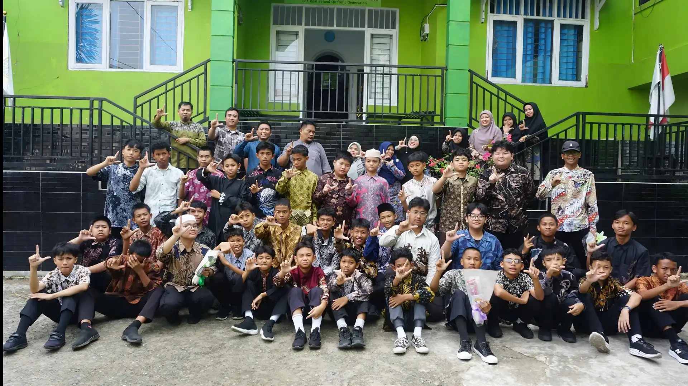

Fasilitas Lengkap
Ruang kelas multimedia ber-AC, pojok baca literasi santri, area makan terpisah ikhwan & akhwat, dan koperasi sekolah sehat.
Lihat Fasilitas Lengkap
arrow_forward
Pendidikan holistik yang memadukan nilai-nilai Qur'ani, keunggulan akademik sains, pembentukan karakter mandiri, dan eksplorasi potensi generasi masa depan.

Alasan tepat bagi Ayah & Bunda mempercayakan pendidikan putra-putri tercinta di bumi etam Samarinda.
Ruang kelas multimedia ber-AC, pojok baca literasi santri, area makan terpisah ikhwan & akhwat, dan koperasi sekolah sehat.
Kampus hijau, asri, dan aman di Samarinda. Lingkungan islami pembiasaan adab kesantrian dan ketenangan menghafal Al-Qur'an.
Didampingi 12 dewan guru dan tenaga kependidikan tersertifikasi serta berkompeten di bidangnya.
Jaringan kemitraan strategis dengan JSIT Indonesia, Ummi Foundation, dinas pendidikan, perbankan syariah, dan pesantren unggulan.
.webp)
Sekolah adalah kawah candradimuka mencetak generasi penerus bangsa yang unggul di segala bidang agar siap bersaing di kancah global. Di SMP IT Al-Firdaus Samarinda, kami meyakini bahwa pondasi kecerdasan intelektual harus berakar kokoh pada keluhuran akhlakul karimah (Al-Adab Qablal 'Ilm).
Melalui integrasi kurikulum nasional Kemendikbudristek dan muatan keagamaan yang aplikatif, anak-anak mendapatkan dukungan penuh untuk melengkapi pembelajarannya—baik melalui jalur asrama (Boarding) maupun reguler terpadu (Pulang-Pergi).
Setiap anak terlahir istimewa dengan ritme tumbuh kembang unik. Kami menghadirkan dua format pembelajaran dengan standar mutu pengajaran dan tahfidz yang setara.
"Belajar. Tinggal. Bertumbuh dalam Naungan Ukhuwah."
"Belajar di Sekolah. Bertumbuh Bersama Hangatnya Keluarga."
Informasi objektif dan transparan untuk memudahkan musyawarah Ayah & Bunda di rumah.
| Aspek Penyelenggaraan | Program Boarding (Asrama Khusus Ikhwan) | Program Pulang-Pergi (Full Day) |
|---|---|---|
| Waktu & Durasi | 24 Jam / 7 Hari Terbimbing | Senin – Jumat (07.00 – 15.30 WITA) |
| Target Tahfidz Al-Qur'an | 5 – 15 Juz (Pilihan Takhassus hingga 30 Juz) | 3 – 5 Juz Mutqin bersanad |
| Konsumsi & Nutrisi | 3x Makan Utama Sehat + Snack Asrama Terjadwal (Menu Sahur & Buka Puasa Sunnah) | 1x Makan Siang Catering Higienis di Sekolah |
| Pembiasaan Puasa Sunnah | Rutin & Terbimbing Setiap Hari Senin & Kamis (Sahur & Buka Bersama Santri) | Mandiri di rumah bersama keluarga |
| Kemandirian & Adab | Kemandirian penuh (Laundry, kamar tidur rapi, kebersihan) | Sinergi pembiasaan adab sekolah & bimbingan rumah |
| Kebijakan Gadget | Bebas HP (Komunikasi telepon via Musyrif terjadwal) | Hanya diperkenankan di luar jam pembelajaran |
Kurikulum komprehensif yang mengantarkan santri unggul dalam ranah spiritual, intelektual, dan teknologi.
Pembinaan Al-Qur'an secara intensif dengan metode Ummi, talaqqi bersanad, target hafalan terarah, dan khataman mutqin.
Penguatan kemampuan percakapan dwibahasa (Arab & Inggris) berstandar global untuk membangun wawasan internasional santri.
Penanaman disiplin harian, kepedulian sosial, kemandirian, dan adab kesantrian dalam naungan sunnah Rasulullah SAW.
Penguasaan sains modern, coding dasar, dan literasi teknologi digital agar santri siap beradaptasi dan kompetitif di masa depan.
Rutinitas harian santri ikhwan dirancang seimbang antara spiritual, akademik, olahraga, dan waktu istirahat yang bermakna.
Untuk memperkuat ruhiyah, meneladani sunnah Rasulullah ﷺ, dan melatih kedisiplinan diri, setiap hari Senin dan Kamis murid yang tinggal di asrama menjalankan ibadah puasa sunnah. Asrama memfasilitasi santapan sahur bergizi di waktu fajar serta hidangan berbuka puasa bersama yang bernutrisi dan penuh kehangatan ukhuwah.
Tahajjud bersama, santap sahur puasa sunnah (Senin & Kamis), shalat Subuh berjamaah, dzikir pagi Al-Ma'tsurat, dan setoran hafalan fajar.
Kurikulum nasional, lab sains terapan, lab bahasa, shalat Dhuha, dan makan siang bersama.
Shalat Ashar, Ekskul (Tapak Suci, Pramuka), serta perawatan diri sore hari santri.
Buka puasa sunnah bersama (Senin & Kamis), shalat Maghrib berjamaah, halaqah tahfidz asrama bersama musyrif, santap malam bergizi, & Isya.
Review pelajaran esok hari dan penuntasan tugas sekolah didampingi asatidz mukim.
Doa tidur, istirahat teratur 6 jam untuk memulihkan kebugaran fisik dan daya konsentrasi santri.
Wadah penyaluran bakat untuk menyeimbangkan kecerdasan spiritual, akademis, dan motorik siswa.
Melatih stamina fisik, sportivitas, strategi, dan kerja sama tim dalam olahraga futsal.
Penguatan kelincahan gerak, kebugaran raga, dan ketangkasan bermain bola basket.
Seni bela diri pencak silat Islami untuk mengasah ketangkasan fisik dan kemuliaan adab.
Percakapan aktif, khitobah/pidato dwibahasa, dan pembiasaan kosakata internasional.
Kepanduan Islam, kemandirian berkemah, keterampilan tali-temali, dan jiwa kepemimpinan.
Pembinaan ruhiyah, tahajjud bersama, muhasabah, dan penguatan nilai spiritual santri.
Persiapan intensif Tes Kemampuan Akademik & penguatan literasi-numerasi siswa tingkat akhir.
Ragam agenda dinamis sekolah, mulai dari syiar hari besar Islam, lomba kemerdekaan, hingga aktivitas literasi perpustakaan.

Aneka perlombaan ketangkasan dan sportivitas santri dalam memeriahkan hari kemerdekaan RI.

Semarak syiar tahun baru Islam 1448 H bersama seluruh santri, dewan asatidz, dan masyarakat.

Penganugerahan apresiasi di akhir bulan untuk santri yang berprestasi dalam bidang tahfidz dan sains.
Dukungan fasilitas berstandar modern untuk menunjang keamanan, kebersihan, dan kenyamanan tumbuh kembang santri.
Pusat ibadah shalat berjamaah, tilawah Al-Qur'an, dan kajian ta'lim harian santri.
Ruang belajar sejuk dan ergonomis dengan fasilitas smart board proyektor & pencahayaan sehat.
Hunian santri putra ber-AC yang nyaman dengan pengawasan musyrif 24 jam serta pembiasaan ibadah & puasa sunnah rutin Senin & Kamis.
Penyediaan makan siang higienis dengan area terpisah ikhwan & akhwat demi menjaga adab.
Penyediaan menu halal thayyib, bergizi, dan higienis yang dipantau oleh tim sekolah.
Temukan jawaban lengkap seputar program Boarding Khusus Ikhwan, Pulang-Pergi, kurikulum tahfidz, serta alur pendaftaran santri baru.
Tahapan pendaftaran transparan, terpadu secara daring maupun luring di kampus Samarinda.
Mengisi formulir biodata calon santri, memilih program (Boarding Khusus Ikhwan / Pulang-Pergi), dan mengunggah berkas raport SD/MI.
Tes pemetaan baca Al-Qur'an (tahsin dasar), observasi kesiapan belajar anak, dan sesi wawancara komitmen orang tua.
Hasil kelulusan diinformasikan secara transparan melalui WhatsApp resmi panitia dan dapat dicek oleh wali murid.
Penyelesaian administrasi, fitting seragam khas Al-Firdaus, pembagian kelas/asrama, serta Masa Pengenalan Santri.
Kiprah alumni yang melanjutkan pendidikan unggulan dan berkarya mengabdi untuk ummat dan bangsa.

"Pondasi adab dan kedisiplinan tahfidz di Al-Firdaus menjadi kompas terpenting saya saat menempuh studi dan beradaptasi di lingkungan perkuliahan."

"Halaqah Qur'an harian melatih ketahanan fokus, daya ingat, dan keikhlasan saya saat menempuh pendidikan kedokteran yang menantang."